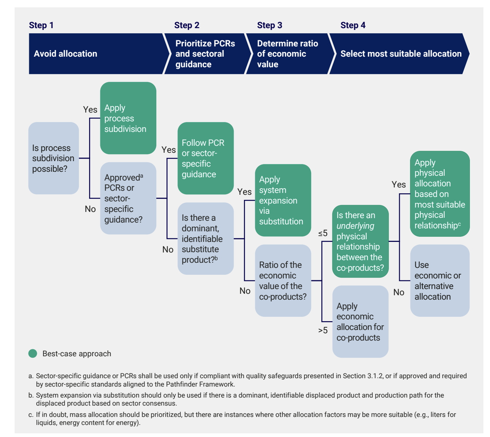

• How can / should total product volume between measurements and allocation work with once another?
• What are actually REQUIRED for allocations
• Worthwhile to reproduce the guidance to choosing which allocation method in more digestable terms?

Step 4: Select the most suitable allocation method
If the calculated economic value ratio is equal to or
lower than five,(18) companies should apply physical
allocation between the studied product and the
co-product(s). That is, allocating the inputs and
emissions of the system based on the most relevant
underlying physical relationship between the product
and co-product. For this, the physical property used
as the allocation factor should most accurately
reflect the underlying physical relationship between
the studied product and co-product. Should no
underlying physical relationship exist, companies
shall allocate emissions based on the economic
value and amount of each co-product that is
produced or based on alternative factors established
by the sector, company, academia, or other sources
of conventions and norms (Figure 9).
Parts
1. Setup to enable allocation to happen
2. Option / toggle to use allocation vs. per item entry
3. Recording allocation value / percentage.